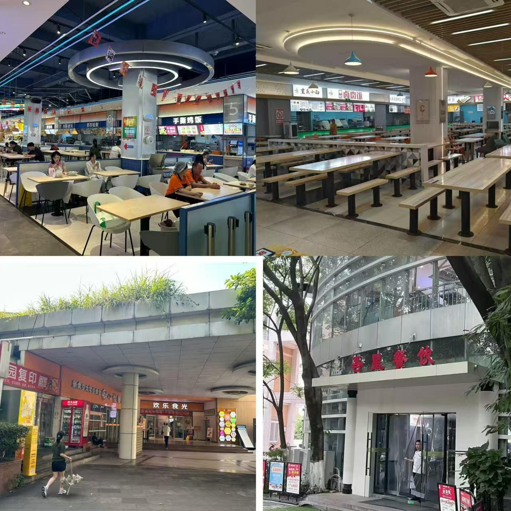
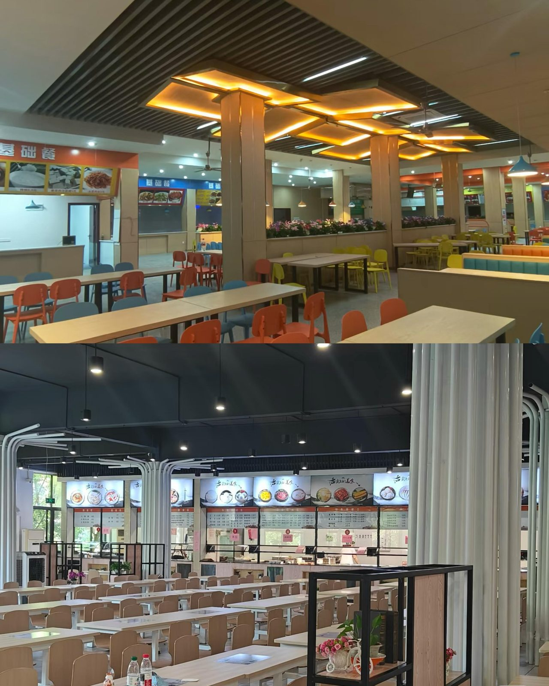
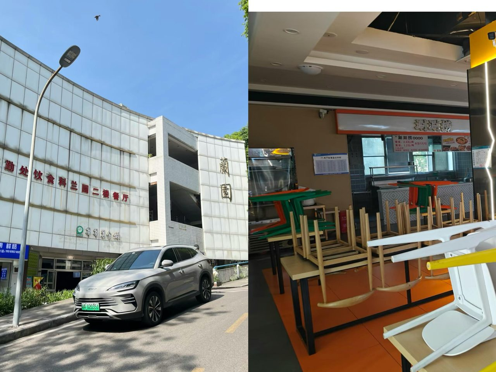
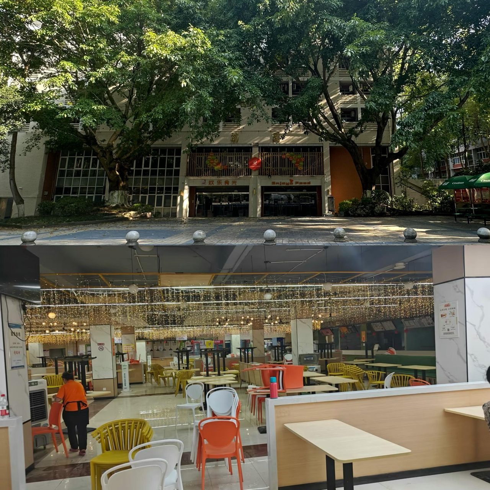
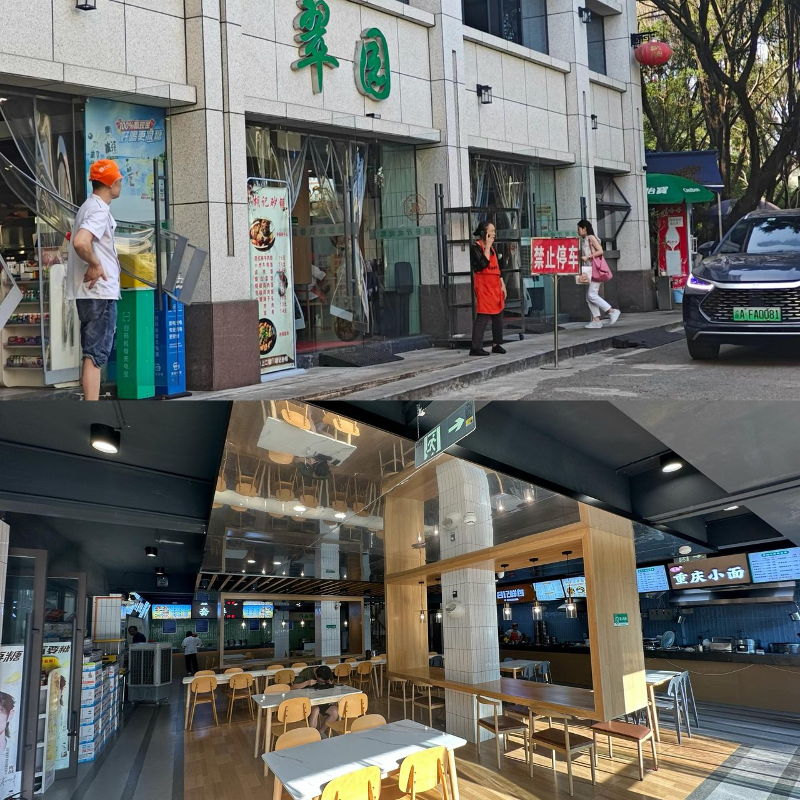
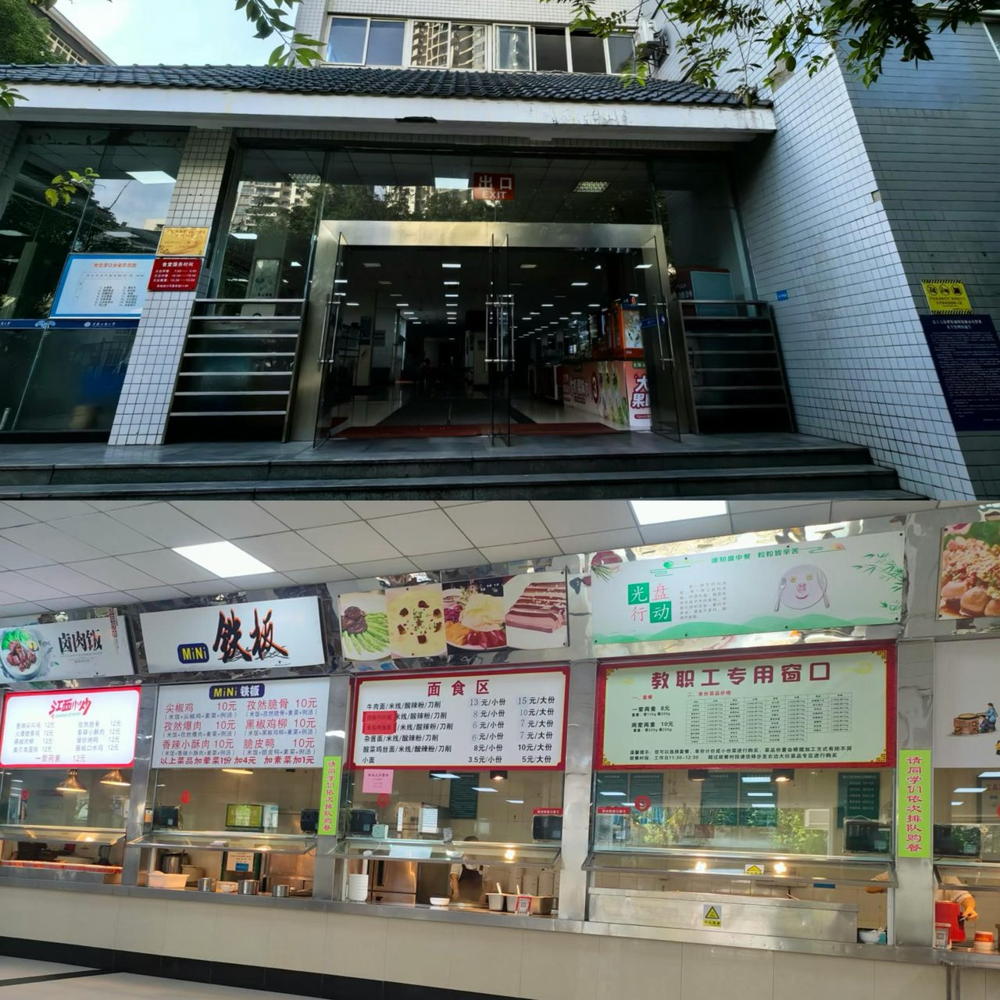
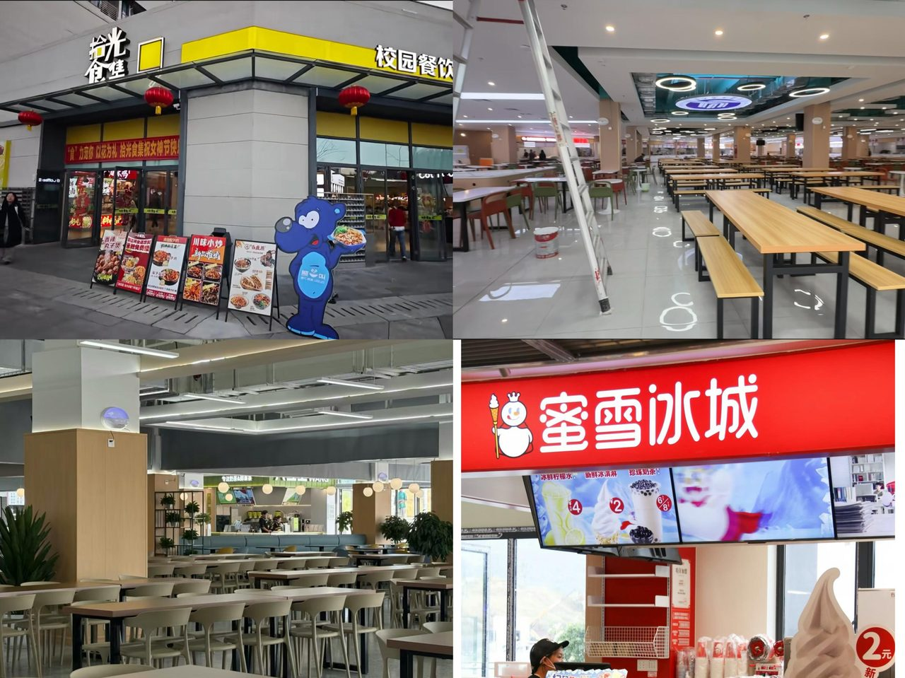
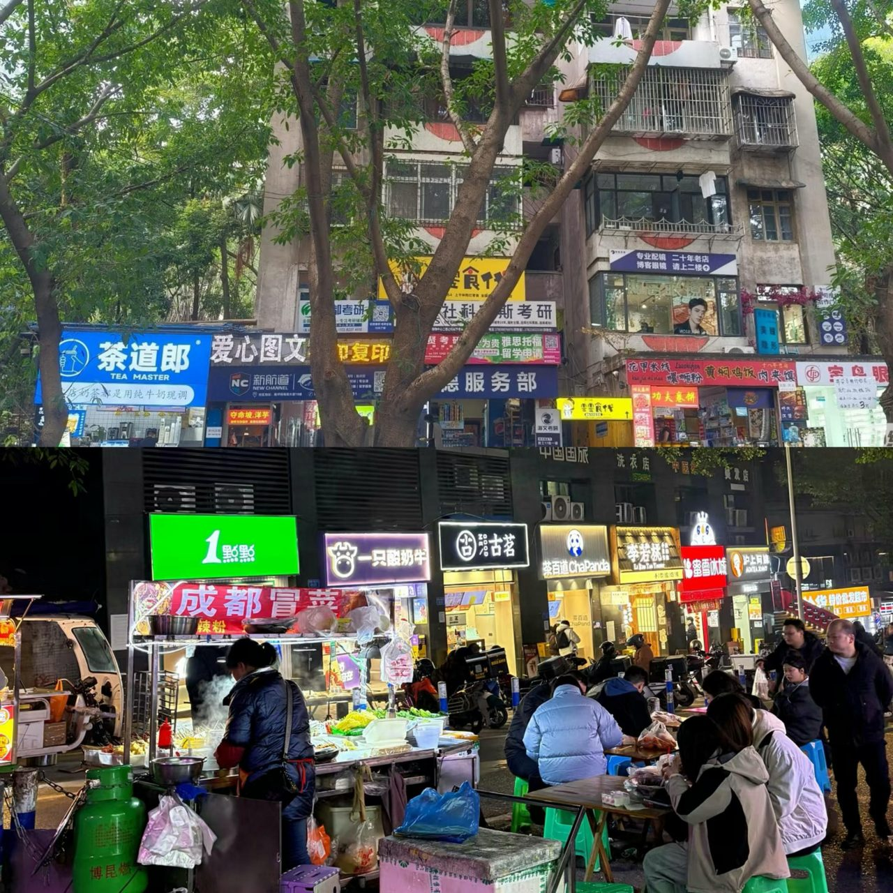
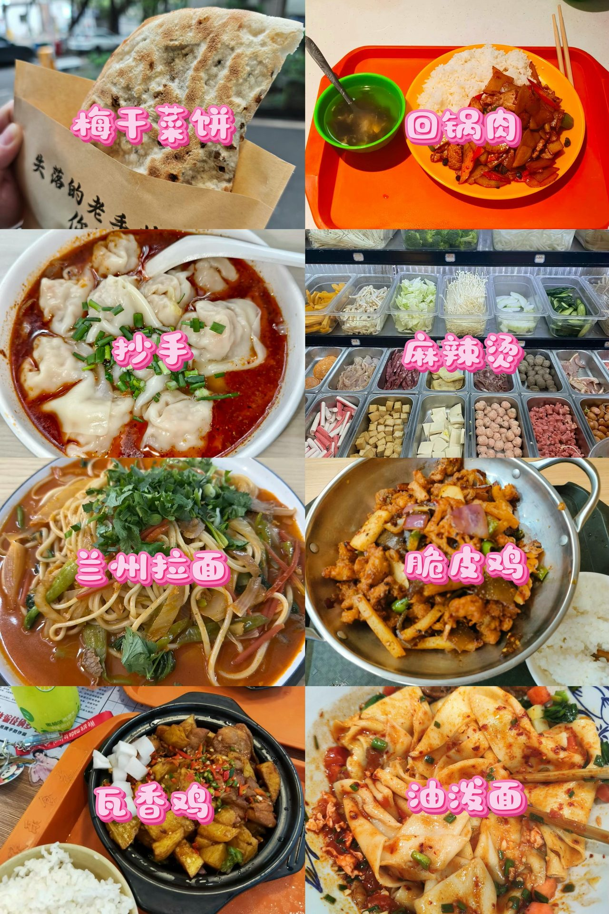

学姐干饭指南
CTBU 的食堂在重庆高校里算能打的。全食堂统一价位：早餐 5 元左右，午晚餐 7-20 元，支持校园卡支付。下面按校区和人气排名，一个一个给你介绍。
一、南岸主校区（5 座食堂）
南岸主校区共 5 座独立食堂：筱园、兰园、松园、菊园、翠园，分布南北两区，覆盖宿舍、教学楼、图书馆全区域。菜品覆盖川渝风味、南北小吃、减脂餐、清真窗口。
1. 筱园食堂（人气 TOP1，共 4 层）
- 位置：北区宿舍、七教旁、十二教楼下，北区学生干饭首选
- 一楼：快乐食间连锁，蛋包饭、鱼粉、铁板烧、奶茶齐全，品类最全，设有清真窗口
- 二三楼：平价大众打菜窗口，一荤一素 7 元，粉蒸肉、牛肉汤是招牌
- 四楼：旋转小火锅、特色小炒，适合多人聚餐

2. 松园食堂（人气 TOP2，2 层）
- 位置：九教、南区宿舍十字路口，2025 年翻新，环境整洁
- 主打罐罐米线、麻辣香锅、拉面、抄手，自习后就餐首选，人少不用排队
3. 兰园食堂（校门旁，3 层）
- 位置：学校正门附近，教职工+学生共用食堂，性价比极高
- 一楼：快乐食间，米线、烧烤、饮品一站式
- 二楼：传统平价打菜窗口，菜品分量足
- 三楼：精品小炒、多人圆桌，适合宿舍聚餐、班级团建


4. 菊园食堂
- 位置：南 16 宿舍与研究生宿舍旁
- 一楼：快乐食间，米线、烧烤、饮品一站式
- 二楼：传统平价打菜窗口，菜品分量足
5. 翠园食堂
- 区位：南老宿舍后山，2 层
- 特色：南北融合菜系，川菜馆、炒饭、套饭齐全，分量超大，适合男生；周边配套校外小吃店多
- 优势：人少不用排队，价格实惠


二、兰花湖校区（馨园食堂）
仅 1 座馨园食堂（3 层），是大一唯一校内食堂，教学楼、宿舍中间位置，步行 2 分钟可达。
一楼、二楼：常规就餐区
- 早餐爆款：面夫子小笼包、粉丝煎饺、杂粮煎饼，均价 5 元
- 午晚餐：冒菜、罐罐米线、烤肉饭、川渝小炒，辣度可选，设有清真窗口
三楼：活动区
无就餐窗口，为学院活动室，用于班会、社团活动、新生团建。
优势：校区规模小不用远距离赶路，价格与主校区完全统一，口味适配新生。
三、茶园校区（中央大食堂）
全新现代化校区，配套综合中央大食堂，服务智能机械、环境资源、食品等工科学院学生，整体设施对标新式商场美食城。
- 环境配置：落地窗采光、休闲卡座、库迪咖啡入驻，融合美食与校园活动，配备中央空调，桌椅全新
- 菜品配置：汇聚川、粤、湘各地风味，专业营养窗口适配食品、工科专业学生，基础套餐、拌面、炸鸡、轻食齐全
- 价格体系：和南岸、兰花湖校区统一标准，一荤一素 7 元起
- 配套优势：食堂紧邻宿舍楼、教学楼，无爬坡路段，高峰期分流设计，几乎无长时间排队

四、全校区通用规则
营业时间
| 餐次 | 时间 | 备注 |
|---|---|---|
| 早餐 | 6:30 - 9:00 | — |
| 午餐 | 10:30 - 13:30 | — |
| 晚餐 | 16:30 - 20:00 | — |
| 夜宵 | 至 21:30 | 仅筱园一楼 |
统一物价
| 类型 | 价格 |
|---|---|
| 早餐 | 3-6 元 |
| 单人套餐 | 7-12 元 |
| 特色小吃/干锅/火锅 | 12-20 元 |
校外补充
- 南岸主校门口：夺命坡小吃街、对面回龙湾夜市
- 兰花湖校门口：小型美食商铺
- 茶园校区：校内商业街，食堂外可补充就餐选择


五、美食暴击
学姐整理到这儿已经开始流口水了，直接上图👇

学姐碎碎念
筱园四楼的小火锅是聚餐神器，松园的罐罐米线是自习后的深夜慰藉，兰园三楼适合宿舍庆功。校外回龙湾夜市也一定要去，烤脑花和串串是重庆大学生的必修课。总之在 CTBU，你不会饿着～